FlashAttention 的简单理解
从 softmax 到 online-softmax
首先，softmax 的计算公式是：
工程上，为了防止溢出，通常会减去一个最大值，确保指数项不会溢出：
如下是伪代码：
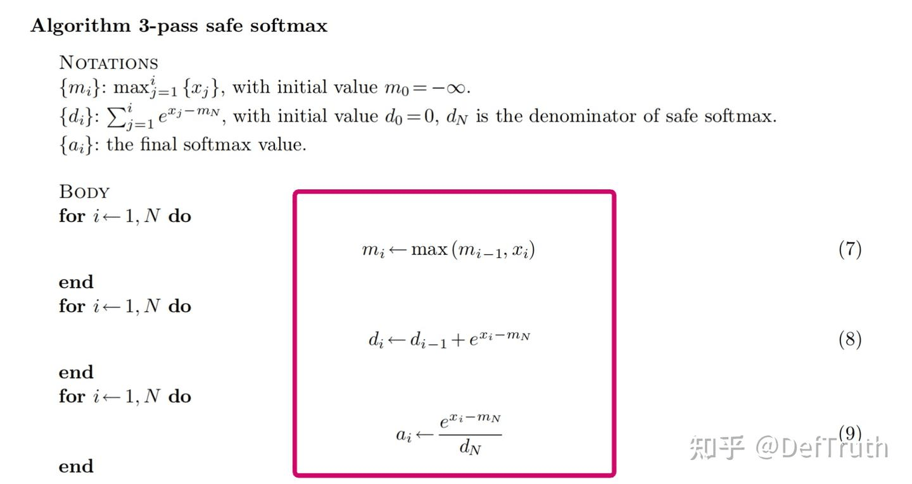
下面介绍 online-softmax，它的目标是把上面的 3 个 for 循环变为 2 个 for 循环，方法如下：
构造 \(d'_i\)。其中，\(m_i = \max(x_1, \ldots, x_i)\)，定义如下：
根据定义，可以得到：
并且因此可以递推地计算：
推导过程
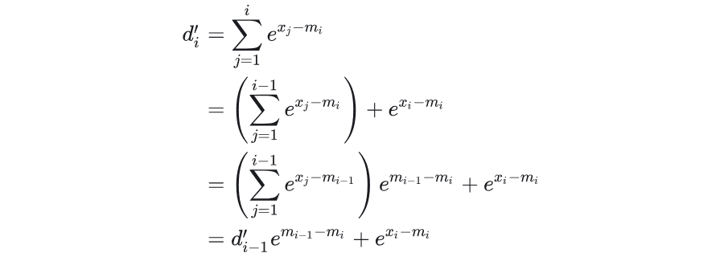
所以，它的好处是可以变成两个 for 循环：
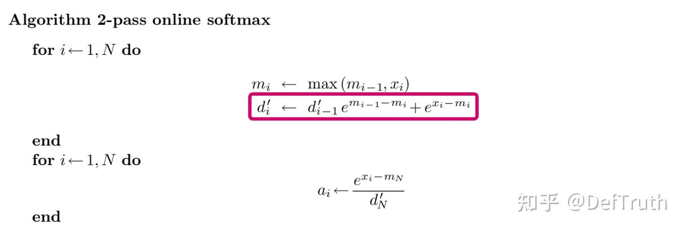
online-softmax 的好处（重点）
但是，变成两个 for 循环的好处是什么呢？仔细想想，其实时间复杂度根本就没有变。跑三个 for 循环计算次数是 3*N，现在变成两个 for 循环，但第一个循环中计算两次，所以计算次数还是 3*N，甚至细究起来，online-softmax 的计算量还更大一些。
理解这一点就是核心之处了。无论是 online-softmax 还是 FlashAttention，都不是从时间复杂度上进行优化，而是尽可能提高缓存友好性，减少程序在 SRAM 和更慢存储介质之间的数据交换。
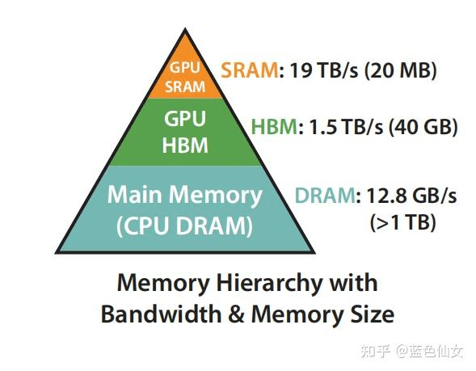
三个循环的情况
我们先来看三个循环的情况。假设 SRAM 只能存储四个向量：
第一步，计算 \(m_i\)，每次之后要进行交换，即：
-
计算 \(m_1\) 时，\(x_1\) 和 \(m_0\) 在 SRAM 中，此时 SRAM 中有 \(m_0, x_1, m_1\)
-
把 \(m_0\) 和 \(x_1\) 从 SRAM 送出去（否则下一步最后会有五个向量）
-
计算 \(m_2\) 时，\(x_2\) 和 \(m_1\) 在 SRAM 中，此时 SRAM 中有 \(m_1, x_2, m_2\)
-
同理，把 \(m_1\) 和 \(x_2\) 从 SRAM 送出去
第二步，计算 \(d_i\)，每次之后要进行交换，即：
-
计算 \(d_1\) 时，\(d_0\)、\(m_N\) 和 \(x_1\) 在 SRAM 中，此时 SRAM 中有 \(m_N, x_1, d_0, d_1\)
-
把 \(x_1\) 和 \(d_0\) 从 SRAM 送出去
-
计算 \(d_2\) 时，\(d_1\)、\(m_N\) 和 \(x_2\) 在 SRAM 中，此时 SRAM 中有 \(m_N, x_2, d_1, d_2\)
-
同理，把 \(x_2\) 和 \(d_1\) 从 SRAM 送出去
第三步，计算 \(a_i\)，每次之后要进行交换，即：
-
计算 \(a_1\) 时，\(d_N\)、\(m_N\) 和 \(x_1\) 在 SRAM 中，此时 SRAM 中有 \(m_N, x_1, d_N, a_1\)
-
把 \(x_1\) 和 \(a_1\) 从 SRAM 送出去
-
计算 \(a_2\) 时，\(d_N\)、\(m_N\) 和 \(x_2\) 在 SRAM 中，此时 SRAM 中有 \(m_N, x_2, d_N, a_2\)
-
同理，把 \(x_2\) 和 \(a_2\) 从 SRAM 送出去
综上所述，每一轮里，基本都是从 SRAM 中读取，计算完之后再送出去，缓存友好性很差，甚至可以说基本没有。
两个循环的情况
对于第一个 for 循环，即：
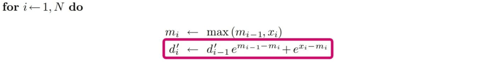
-
计算 \(m_1\) 和 \(d_1\) 时，\(m_0\)、\(x_1\) 在 SRAM 中，此时 SRAM 中有 \(m_0, x_1, m_1, d_1\)
-
把 \(m_0\) 和 \(x_1\) 从 SRAM 送出去
-
计算 \(m_2\) 和 \(d_2\) 时，\(m_1\)、\(x_2\) 在 SRAM 中，此时 SRAM 中有 \(m_1, x_2, m_2, d_2\)
-
把 \(m_1\) 和 \(x_2\) 从 SRAM 送出去
对于第二个 for 循环，和上面三个循环中的最后一个是一样的。
所以总体来看，在两个循环的情况下，我们也是每次都要从 SRAM 中读取，计算完之后再送出去。但由于只需要两个循环，所以和 SRAM 交换的次数会少很多。
关键点就在于第一个循环做了合并，从而把 \(m_i\) 和 \(d_i\) 的计算合并到一起，减少了和 SRAM 的交换次数。
FlashAttention V1
从这一小节开始，进入到 FlashAttention 部分。既然可以优化成两个 for 循环（2-pass），我们还能不能优化成 1-pass？遗憾的是，对于 safe-softmax，并不存在这样的 1-pass 算法。但是，Attention 的目标并不是求 softmax，而是求最终的输出 \(O\)：
原理和推导
原始计算 Attention 的情况，其实就是多了红框中的部分，其他部分就是上面介绍的 online-softmax 流程。
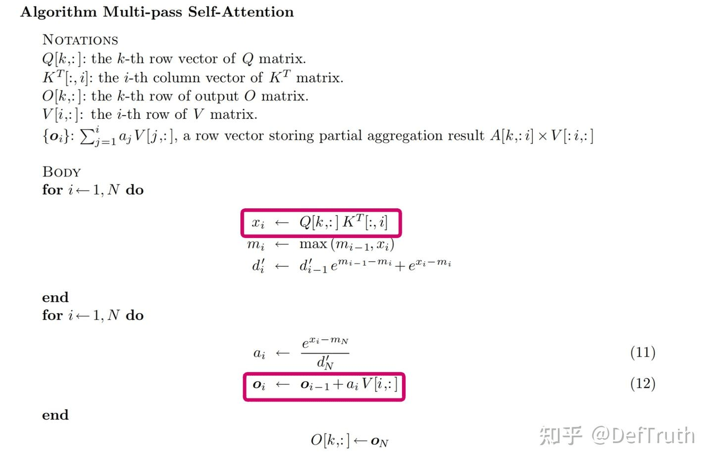
下面介绍 FlashAttention 的做法。它有点类似 online-softmax，也是定义一个新的变量：
由定义可知：
并且可以推导出 \(o'_i\) 和 \(o'_{i-1}\) 的关系：
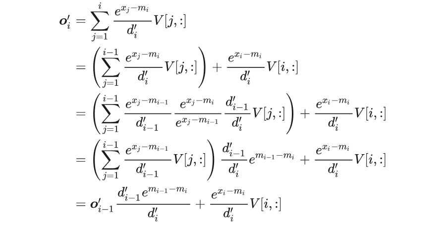
所以，最终可以合并为一个循环：
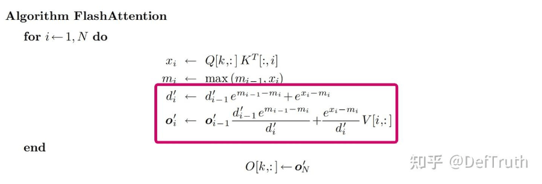
总结
可以看出，FlashAttention 的优化和 online-softmax 的优化思路很相似。通过一个新的定义，成功把 \(a_i\) 这一步隐去了，因此可以合并为一个循环。
FlashAttention V2
这一部分会很简略，甚至很多地方可能是错的。
V1 的分块操作
显然，正常情况下，对于向量肯定不是一个一个地操作，而是进行分块处理：
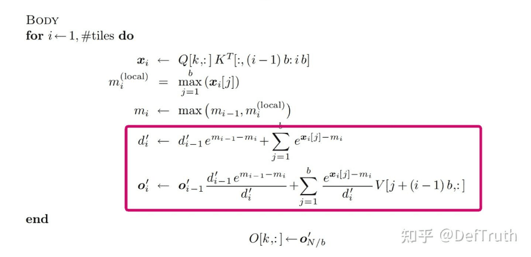
上面的 \(b\) 就是分块大小，下面是 FlashAttention V1 的伪代码：
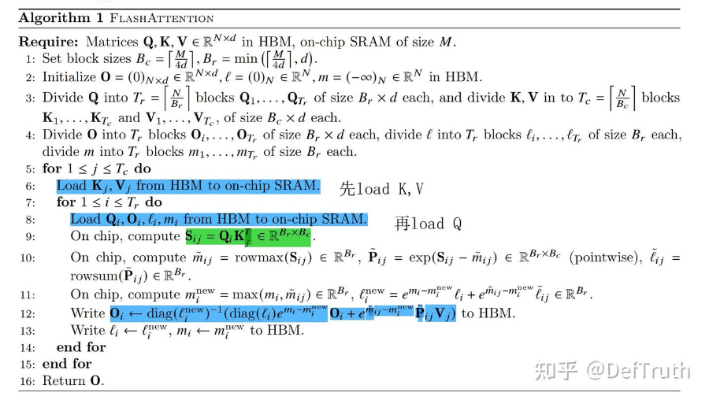
我没有太细究这一部分，意会即可。具体可以看参考文章，里面还有各种细节分析，比如分块大小对速度的具体影响公式等等。（不过我感觉太细节了。）
V2 的优化
FlashAttention V2 其实没有大刀阔斧的优化，更多是在 V1 的基础上做一些细节优化。
减少非 matmul 的冗余计算，增加 Tensor Cores 运算比例
这个不了解，没细看。
增加 seqlen 维度的并行
FA1 中的伪代码是先 load K/V，再 load Q；在 FA2 中，算法调换了循环顺序，先 load Q，再 load K、V。
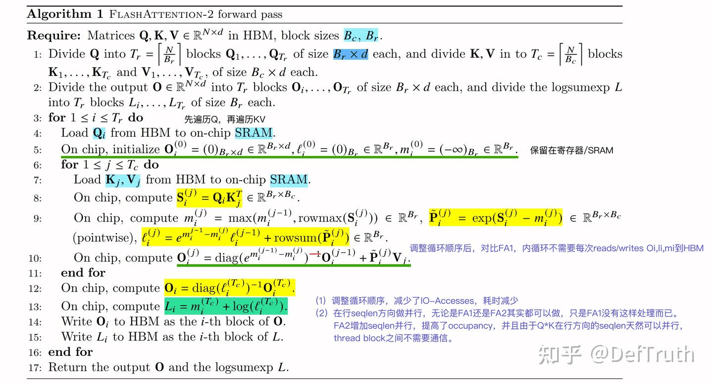
它的好处就是调整完之后，\(O_i\) 可以直接在外层计算，不像 FA1 中那样需要在内层计算。具体细节其实还有很多，比如上面的操作只会出现在 forward 中，backward 中没有调整顺序。具体细节看参考文章。
更好的 Warp Partitioning 策略，避免 Split-K
这一部分也没有细看，就放一张图吧。具体细节还是看参考文章。
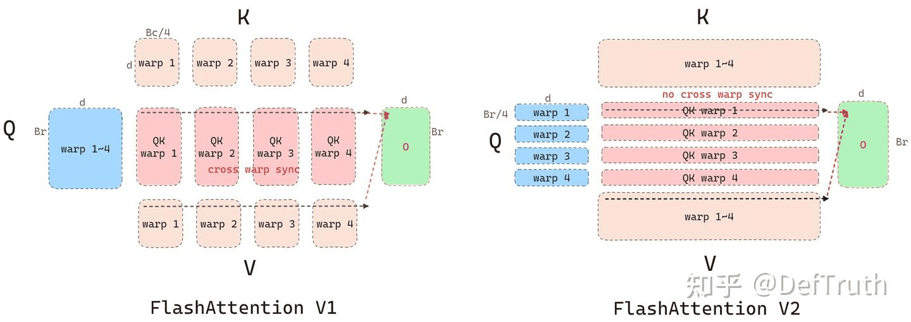
总结
这是一个非常扎实且有效的工作。现在，FlashAttention 也是计算 Attention 的主要实现方式之一。其中的思想很有过去计算机时代的特点：空间很宝贵，因此要尽量提升缓存一致性。平时更普遍的思路往往是空间无所谓，优化计算量才是关键；过去很多节省空间的算法，也基本被遗弃在历史长河中了。但是在显存场景里，还是有很多空间利用的 trick，比较有 old-school 的感觉。